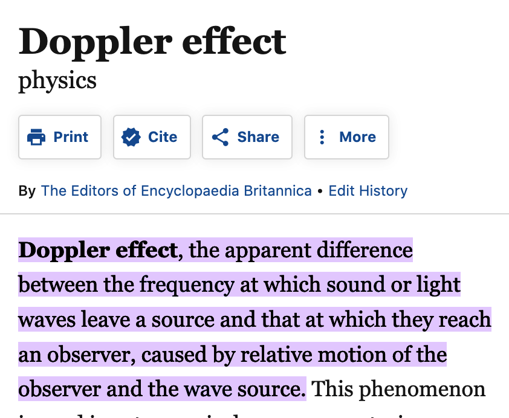
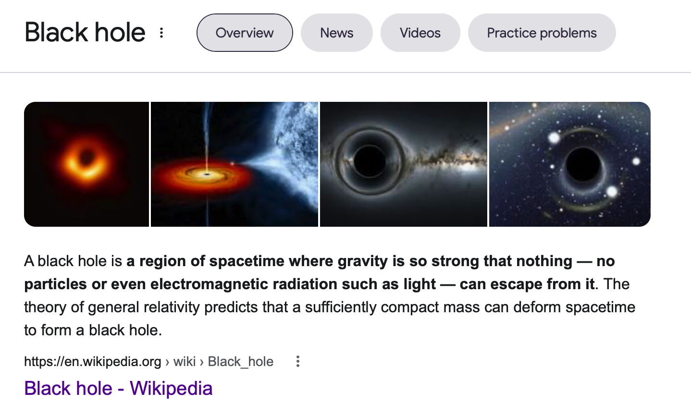

Relativity
In 1905, Albert Einstein published the theory of special relativity, which explains how to interpret motion between different inertial frames of reference — that is, places that are moving at constant speeds relative to each other.
When we wake up brushed by panic in the dark,
our pupils grope for the shape of things we know.
Photons
loosed from
A particle of light

slits
Double Slits Experiment

doubleness
in their cast shadows that
Wave–particle duality is the concept in quantum mechanics that every particle or quantum entity may be described as either a particle or a wave

stripe
a dimmed lab’s wall
"Meaning Waves"
—particles no more—
and with a wave bid all certainties goodbye.
For what’s sure in a universe that
dopplers

They say a flash seen from on and off a hurtling train will explain why
time dilates
like a perfect afternoon;
predicts
In physics and relativity, time dilation is the difference in the elapsed time as measured by two clocks.
black holes
where parallel lines
will meet, whose stark horizon even starlight,
bent in its tracks, can’t resist.

If we can think this far, might not our eyes adjust to the dark?